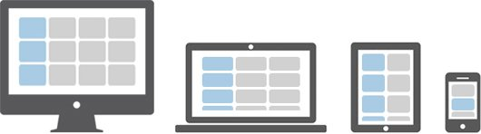

Bootstrap
Bootstrap
- Open-source CSS framework © Twitter
- Pomáha jednudocho dizajnovať responzívne weby
- Obsahuje prepripravené štýly pre akýkoľvek element
Normalize
- Zjednocuje štýly formulárových prvkov, ktoré potom vyzerajú vo všetkých browsroch rovnako.


Grid system
- Umožňuje dizajnovať stránky tým, že rozdeľuje obsah do 12 virtuálnych stĺpcov.
- Stĺpce je možné spájať a vytvárať tak širšie stĺpce - sekcie.
- Každý stĺpec sa môže chovať na rôznych rozlíšeniach inak. 
Kontajner
Riadky mriežky umiestňujeme do kontajnéra:
.container– mriežka s pevnou šírkou.container-fluid– na celú šírku stránky
<div class="container">
<div class="row">
...
</div>
</div>
<div class="container-fluid">
<div class="row">
...
</div>
</div>
Stĺpce
- Stĺpce do riadka pridávame ako počet dvanástin, ktoré má daný stĺpec v riadku zaberať,
napr:.col-md-4 - Ak sa počet dvanástin v riadku prekročí, ďalší stĺpec sa automaticky zalomí na ďalší riadok.
Príklad
<div class="container">
<div class="row">
<div class="x-red col-md-4">1</div>
<div class="x-green col-md-4">2</div>
<div class="x-blue col-md-4">3</div>
</div>
</div>
Stĺpce
- Triedy veľkosti zariadenia:
xs– telefónysm– tabletymd– notebookylg– desktopy
Je môžné ich kombinovať pre jeden obsah stĺpca a ich veľkosť a poloha sa budú prispôsobovať podľa veľkosti zariadenia.
Rozširujeme definíciu stĺpcov aj pre menšie displaye
<div class="container">
<div class="row">
<div class="x-red col-md-4 col-sm-6 ">1</div>
<div class="x-green col-md-4 col-sm-6 ">2</div>
<div class="x-blue col-md-4 col-sm-12">3</div>
</div>
</div>
<div class="container">
<div class="row">
<div class="x-red col-md-4 col-sm-6 col-xs-12">1</div>
<div class="x-green col-md-4 col-sm-6 col-xs-8 ">2</div>
<div class="x-blue col-md-4 col-sm-12 col-xs-4 ">3</div>
</div>
</div>